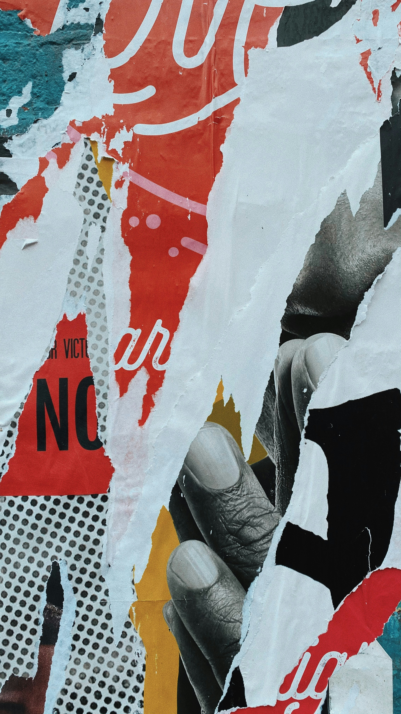
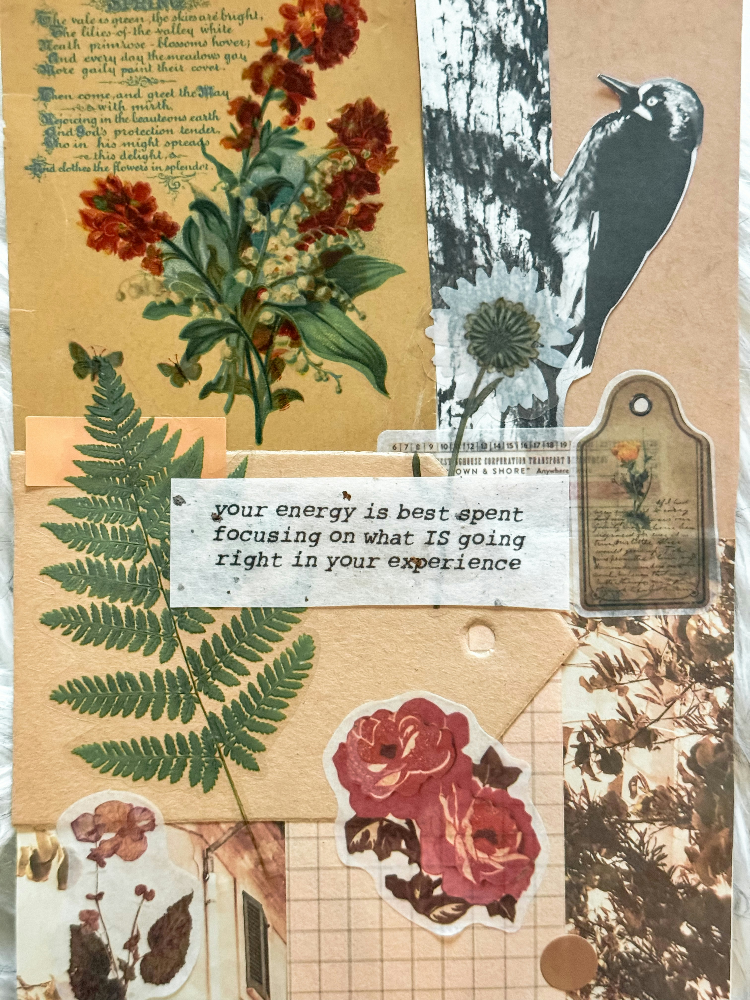
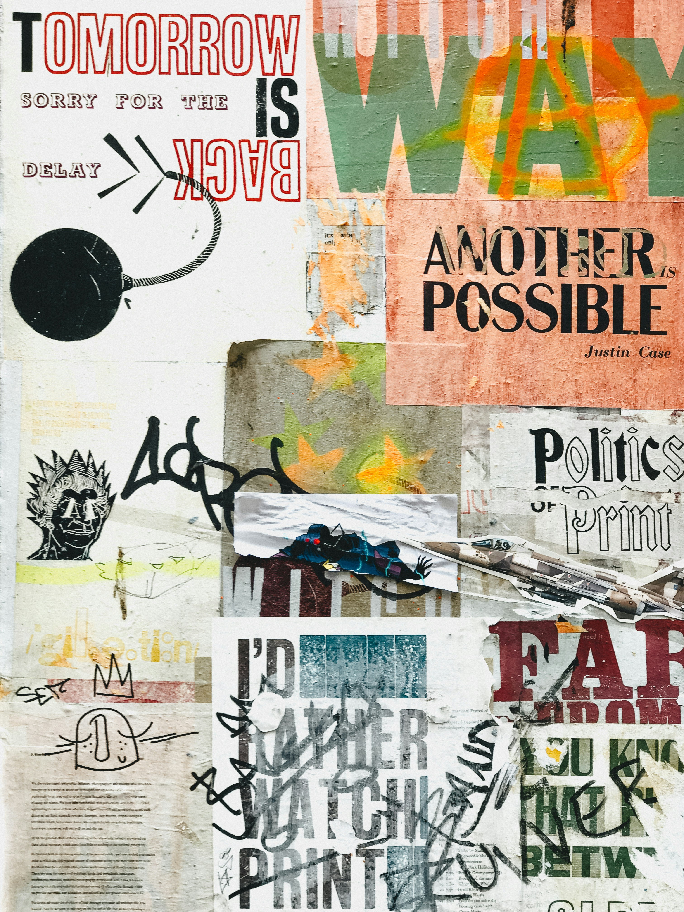

Diário
Um espaço para escrever sobre acontecimentos, pensamentos e sentimentos do cotidiano.
Um journal é uma forma de registrar aquilo que queremos lembrar, organizar ou simplesmente colocar para fora.
Palavras, imagens, datas, pensamentos, pequenos acontecimentos. Não existe uma maneira certa de montar uma página.
O Collage-journal transforma essa experiência em um espaço digital para criar, experimentar e guardar.
Um journal é um espaço para registrar experiências, pensamentos, ideias e momentos do cotidiano.
Pode ser um diário, uma coleção de memórias, um lugar para organizar planos ou simplesmente uma página criada porque alguma coisa chamou sua atenção.
Algumas páginas são cheias de texto. Outras têm apenas uma fotografia, uma data ou algumas palavras.
O importante não é seguir um formato específico, mas encontrar uma maneira de registrar aquilo que faz sentido para você.
Um espaço para escrever sobre acontecimentos, pensamentos e sentimentos do cotidiano.

Uma maneira flexível de organizar tarefas, planos, hábitos e compromissos.

Uma combinação de imagens, textos, desenhos, cores e diferentes elementos visuais.

A experiência de registrar e organizar tudo isso utilizando ferramentas digitais.
O papel tem suas próprias possibilidades: textura, recortes, desenhos, fotografias e páginas que carregam marcas de quem as criou.
O meio digital permite experimentar essas ideias de outra maneira.
É possível reorganizar elementos, combinar diferentes tipos de conteúdo, testar novas composições e guardar cada criação sem precisar começar uma nova página física.
O Collage-journal nasce justamente desse encontro: a liberdade visual da colagem com a flexibilidade do digital.
Tente criar a sua: